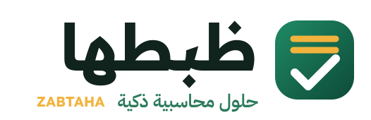

ظبطها.. وارتاح
اختر النسخة المناسبة لنشاطك
ظبطها للمحاسبةقيود يومية، مراكز تكلفة ومشاريع، أقساط وخطط سداد، فواتير وسندات، ضريبة، وتقارير مالية كاملة. للتطوير العقاري والمقاولات والشركات.
افتح النسخة ظبطها للمتاجركاشير بالباركود، مخزون، فواتير بيع وشراء، إيصالات حرارية، وإغلاق يومية. للمحلات والمتاجر.
افتح النسخة
افتح النسخة ظبطها للمتاجركاشير بالباركود، مخزون، فواتير بيع وشراء، إيصالات حرارية، وإغلاق يومية. للمحلات والمتاجر.
افتح النسخة
البيانات تُحفظ على جهازك داخل المتصفح. استخدم Chrome أو Edge، واختر من الإعدادات «مكان ملف البيانات» وخذ نسخة احتياطية بانتظام.